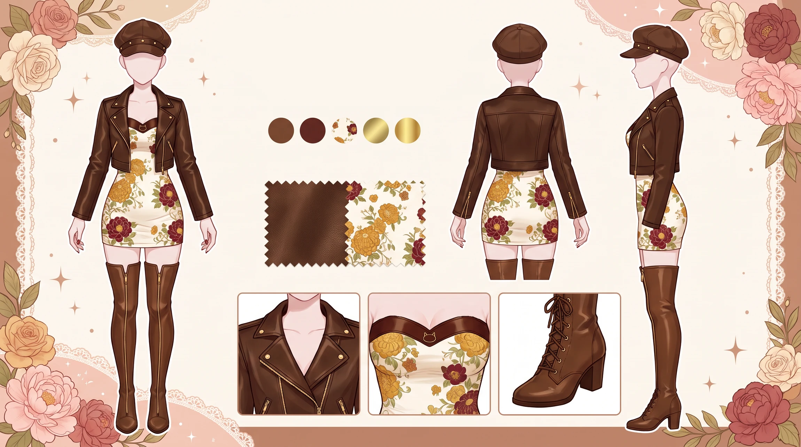
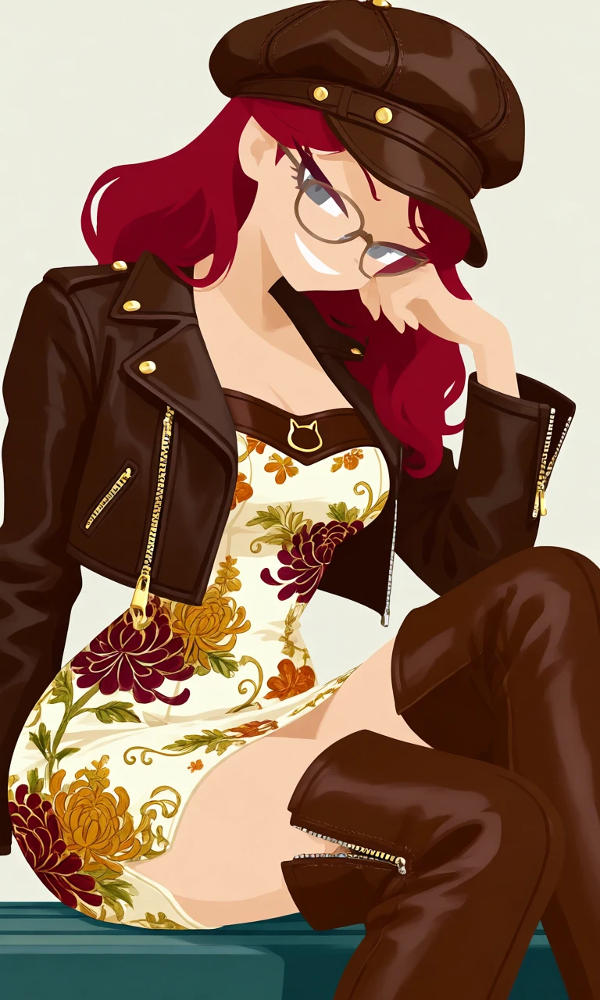
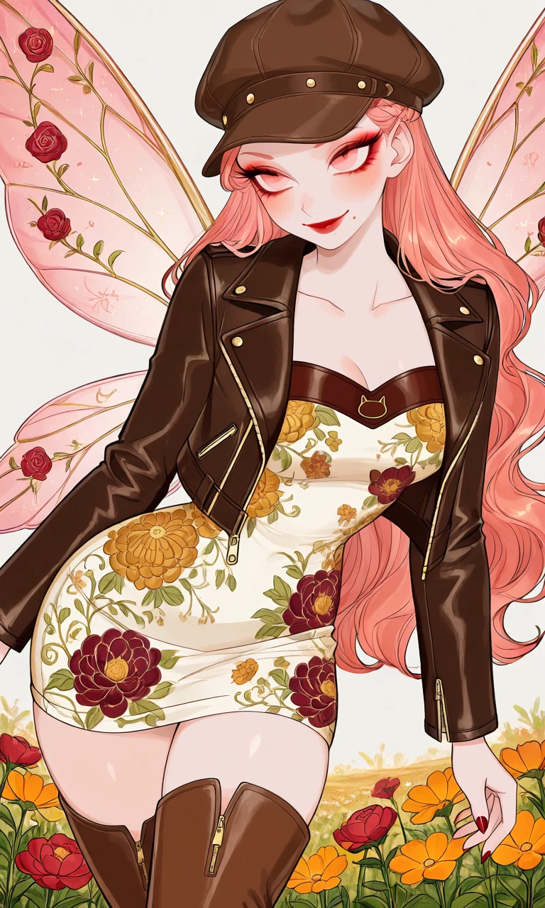

Petals & Rebellion

Outfit Prompt
The dress is a short, form-fitting bodycon mini dress made from structured cream-colored fabric decorated with an intricate vintage floral tapestry pattern. Large burgundy-red and golden-mustard chrysanthemums are scattered among smaller rust-orange blossoms, delicate olive-green leaves, and curling botanical vines.
The strapless dress features a gently curved sweetheart neckline bordered by a wide band of smooth chocolate-brown leather. A small polished gold cat-head outline ornament decorates the center of the neckline.
The dress hugs the bust, waist, hips, and upper thighs, creating a smooth, tailored hourglass silhouette. Subtle vertical seams provide shaping without adding volume. The short mini hemline ends at the upper thighs, approximately halfway between the hips and knees. The skirt portion remains narrow and closely fitted around the hips and thighs, with a smooth, straight hemline. No flared skirt, no pleats, no gathered fabric, no ruffles, and no exaggerated volume.
Layered over the dress is a fitted, cropped chocolate-brown leather motorcycle jacket, ending just above the natural waist. The jacket features structured shoulders, long fitted sleeves, wide notched lapels, polished gold studs, a central gold zipper with a decorative cat-head-shaped zipper pull, and small gold buttons at the cuffs. The jacket is worn open to display the floral dress and its decorative neckline.
A matching chocolate-brown leather newsboy cap features a softly rounded crown made from stitched curved panels, a short curved brim, and a fitted leather band decorated with small polished gold buttons.
The outfit is completed with smooth chocolate-brown leather over-the-knee boots extending several inches above the knees. The boots feature fitted shafts, almond-shaped toes, elegant medium-height block heels, and discreet inner-side zippers. A small section of bare thigh remains visible between the tops of the boots and the short dress.
The overall outfit combines vintage floral elegance with modern fitted leather fashion, creating a coordinated autumn look in warm cream, burgundy, mustard gold, olive green, and chocolate brown.
Outfit Examples



